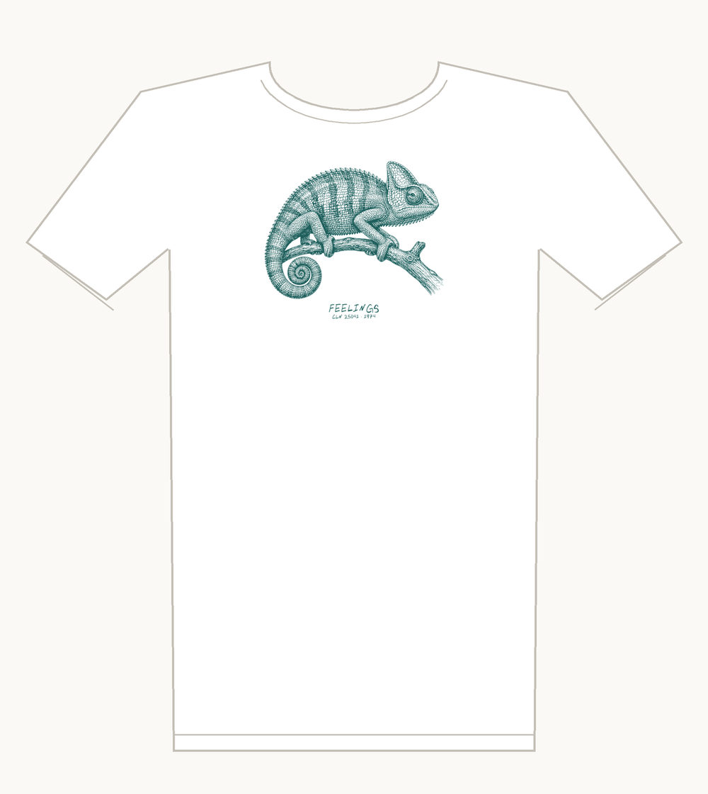
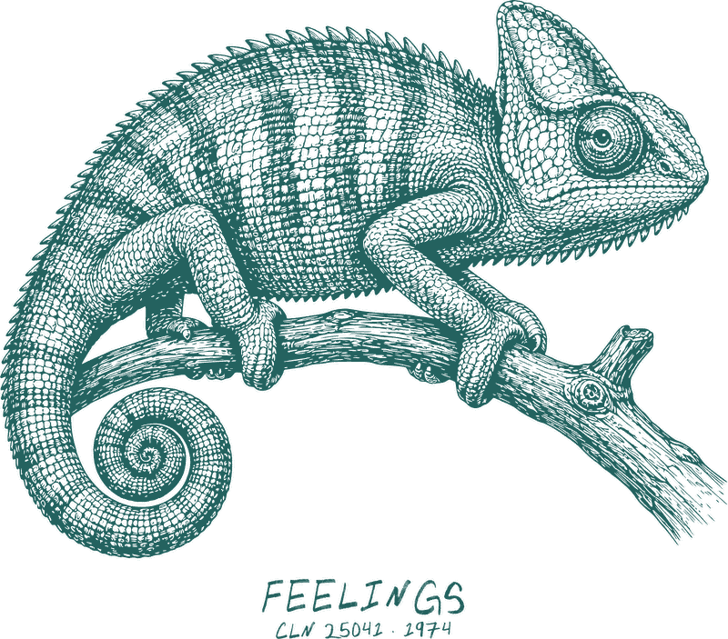

Feelings tee
A chameleon, which wears its feelings on its skin. In one ink, you can’t see them.
White tee, teal ink, one color · Bella+Canvas 3001 · S to 2XL
Printed on the front: FEELINGS, CLN 25041 · 1974
Buy $32
Shipping is $5, US only. Each shirt is made when you order it and ships in about a week. Questions: reate.records.stardust299@slmail.me.

The record
Jay Richford & Gary Stevan – Feelings
Carosello CLN 25041 · 1974 · on Discogs
I’ve played it 263 times on Spotify.
Play the record
Italian library music: records made for TV and film producers to license, not for shops. Carosello pressed it in Milan in 1974.
The sleeve credits two pseudonyms, Jay Richford and Gary Stevan. Stefano Torossi has said four composers made it together (himself, Giancarlo Gazzani, Sandro Brugnolini and Puccio Roelens) and split it four ways. Spotify lists it under Torossi.
Every title is a feeling: Flying High, Going Home, Walking In The Dark, Fighting For Life, Feeling Tense, Running Fast, Loving Tenderly, Fearing Much, Being Friendly, Having Fun.
A grail for library collectors: on Discogs about 3,300 people want the 1974 original and fewer than 150 have one. The British library label Conroy reissued it in 1976 in one of its red sleeves.
A fan’s tribute to the record, not official merchandise of the artist or label.